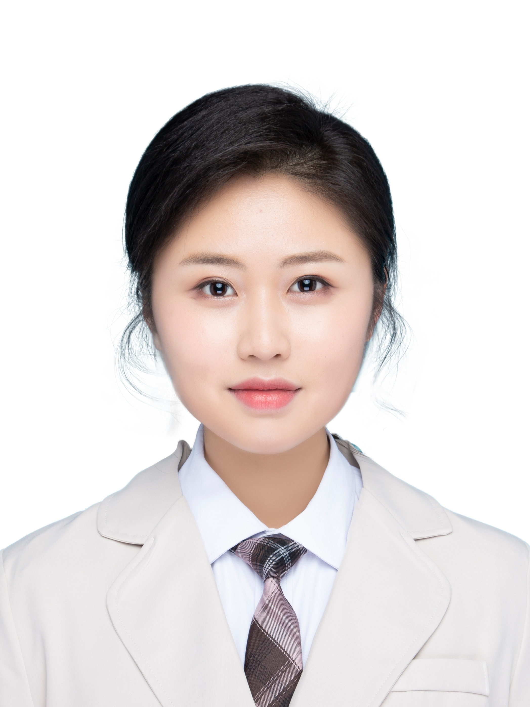

|  |
|
杨唯依 (Yang, Weiyi)
I have been an assistant professor in School of Computer Science and Technology at Harbin Institute of Technolgy, Shenzhen, China since Jan, 2022.
My research interesting focuses on Machine Translation, and Natural Language Processing. I have published more than 30 papers top-tier NLP/ML/AI conferences and journals, such as ACL, EMNLP, ICLR, AAAI, TPAMI, TASLP, TFS, etc. I served as the Senior Program Committee of AAAI-2021/2022 and the Area Chair of ACL-2022. I gave a cutting-edge tutorial at EMNLP-2021.
E-mail: ywyfusu@163.com
|
Research Interest
Eduction Experience
- 2018.09--2022.06, Northeast Agricultural University, B.Eng. in Landscape Architecture, B.S. in Finance
Research Experience
- 2021, Independent research: Smart cities and regional finance
- 2021, Independent research: Space syntax of public spaces in the post-pandemic era
- 2021, Group research: Rural revitalization and poverty alleviation
- 2020, Research Assistant to Associate Prof. Fu Xingyuan at NE Agricultural University
- 2020, Research Assistant at Harbin Institute of Technology, Urban Research Group
- 2020, Research Assistant to Professor Li Nan at Fudan University
Work experience
- 2021, Research & Development Intern
- 2020, Environment & Sustainability Intern
- 2020, Publicity Manager & Event Ambassador
- 2020, Arts Instructor
Leadership and communitiy engagement
- 2020-21, Student Assembly, President
- 2020-21, Committee on Student Organisations and Activities, Chair
- 2020-21, University Student Lecturers Group, Lecturer
- 2020 The 27th Provincial Student Federation Congress, Student Representative
- 2020 COVID-19 Community Care, Volunteer
- 2019-20 College of Horticulture and Landscape Architecture debate team, Captain
- 2018-21 University martial arts team, Captain
Last update：